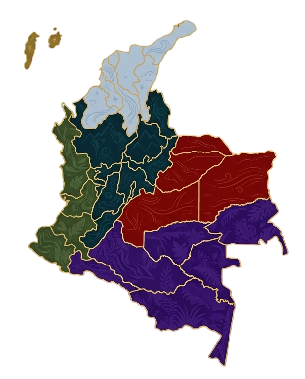

Región Caribe
La tradición oral del Caribe colombiano está llena de relatos relacionados con ríos y espíritus.

La tradición oral del Caribe colombiano está llena de relatos relacionados con ríos y espíritus.
Las leyendas del Pacífico nacen entre la selva, el océano y la tradición afrocolombiana.
La región andina concentra gran parte de los mitos tradicionales de Colombia.
Los llanos orientales conservan historias transmitidas por generaciones de campesinos y vaqueros.
La selva amazónica alberga mitos vinculados con espíritus guardianes de la naturaleza.